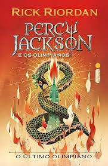

O Último Olimpiano

Os meios-sangues passaram o ano inteiro se preparando para a batalha final contra os Titãs. O exército de Cronos está mais forte do que nunca, e cada novo deus ou semideus que se une à causa aumenta o poder do inimigo.
Enquanto os deuses lutam contra Tifão, o monstro mais temido de todos, Cronos avança em direção a Nova York, onde o Monte Olimpo está vulnerável. Cabe a Percy e seu exército de heróis impedir que o titã destrua o coração do mundo dos deuses.
Neste emocionante encerramento da saga, o destino do Olimpo depende das escolhas de Percy Jackson — e do cumprimento de uma antiga profecia que mudará tudo.